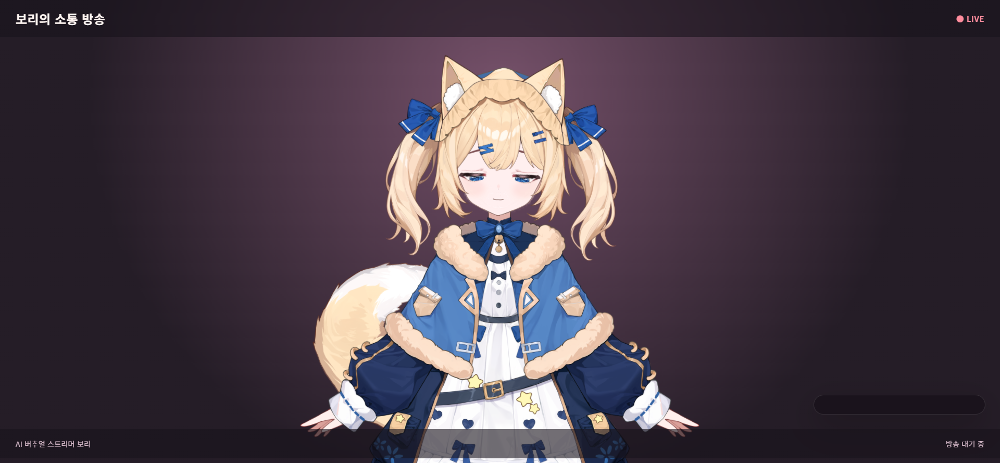

Demo
채팅 입력부터 응답 생성, 음성 재생, 표정·모션 실행까지의 실제 동작이다.
Overview
한 대의 로컬 머신에서 전부 돌아가는 AI 버추얼 스트리머다. 서버, 방송 화면, 관리자 앱이 모두
127.0.0.1에서 동작하며 외부 호스팅이나 클라우드 인프라를 쓰지 않는다.
시청자 채팅이 들어오면 아래 파이프라인을 거쳐 답변과 연출이 만들어진다.
Engineering
각 항목의 상세한 근거와 트레이드오프는 설계 문서에 정리했다.
LLM과 음성 합성이 비동기라, 응답이 도착하기 전에 방송이 종료·재시작되면 이전 방송의 답변이 새 화면에 나왔다. 방송 상태 플래그만으로는 "종료 후 재시작"을 구분할 수 없다. 호출 시점의 세대 번호를 캡처해 두고 콜백에서 세대가 다르면 결과를 폐기하도록 해결했다.
apps/server/src/index.ts동일한 JSON Schema 하나를 OpenAI는 Structured Outputs로, Anthropic은 강제 도구 호출로 감싼다. 프로바이더가 달라도 검증 코드는 하나다. 구조화 출력은 형식만 보장하므로, 감정·모션 이름은 허용 목록을 통과해야만 실행되고 서버가 API 경계에서 한 번 더 강제한다.
packages/llm/src/validate.tsWebAudio로 계산한 파형 실효값을 입 벌림에 매핑하고 지수 평활로 떨림을 제거했다. 파라미터를 그냥 설정하면 Cubism SDK가 매 프레임 덮어쓰기 때문에, SDK 업데이트 순서를 분석해 정확한 지점에 주입 코드를 삽입해야 했다.
apps/broadcast/src/main.tsx지수 감쇠 보간으로 60Hz든 144Hz든 같은 속도로 시선이 움직인다. 그 위에 확률적 반응, 응시 시간 랜덤화, 정면 복귀 대신 둘러보기 흐름으로 이어가기 같은 연출 규칙을 파라미터로 얹어 인형처럼 보이는 문제를 풀었다.
apps/broadcast/src/main.tsx벡터DB 없이 코사인 유사도를 직접 구현하고 중요도를 가중치로 반영했다. 임베딩 키가 없거나 호출이 실패해도 예외로 중단되지 않고 중요도·최신순 정렬로 자동 강등된다. 저장 시 임베딩 실패도 저장 자체를 막지 않는다.
packages/memory/src/store.ts구매한 상용 Live2D 모델과 Cubism SDK는 재배포가 금지되어 저장소에 넣을 수 없다. Vite 커스텀 플러그인을 만들어 개발 서버에서는 미들웨어로 서빙하고 빌드에서는 동일한 URL 구조로 복사한다. 덕분에 코드에 환경 분기가 남지 않는다.
apps/broadcast/vite.config.tsStack
외부 런타임 의존성이 사실상 없다. Express도, ws도, ORM도, 벡터DB도, LLM SDK도 쓰지 않는다.
서버는 Node 내장 http 하나이고 모든 외부 API 호출은 내장 fetch다.
OBS WebSocket v5의 인증 핸드셰이크도 직접 구현했다.
| 영역 | 사용 기술 |
|---|---|
| 서버 | TypeScript, Node 내장 http, tsx |
| 방송 화면 | React 19, Vite 6, WebGL(Cubism SDK), WebAudio |
| 관리자 앱 | Electron 34 + React 19 |
| LLM | OpenAI Chat Completions(Structured Outputs), Anthropic Messages API |
| 음성 합성 | OpenAI TTS, ElevenLabs 어댑터 |
| 장기 기억 | JSON 파일 저장 + 코사인 유사도 직접 구현, OpenAI 임베딩 |
| 송출 연동 | OBS WebSocket v5 클라이언트 직접 구현 |
| 구성 | npm workspaces 모노레포, 소스 약 3,300줄 |
Documents
설계 근거와 진행 상황을 문서로 남겼다. 각 항목은 저장소의 해당 문서로 연결된다.
워크스페이스 구조와 의존 방향, 데이터 흐름, 상태 동기화 방식, 신뢰 경계와 동시성 제어까지 시스템 전반을 다룬다.
기록해 둔 12건의 결정. 왜 SQLite 대신 JSON 파일인지, 왜 WebSocket 대신 폴링인지를 맥락·근거·트레이드오프와 함께 남겼다.
캐릭터 설정, 화면 레이아웃, 채팅 선별 규칙, 가드레일, 감정·행동 정책, 기억 시스템 요구사항.
요구사항을 단계별 제작 순서와 완료 기준, 테스트 게이트로 옮긴 문서.
완료 범위, 구현했으나 검증하지 않은 것, 알려진 한계, 남은 작업 우선순위를 구분해 정리했다.
포트 구성, LLM·TTS·기억 설정, OBS 송출 절차, 구도·시선·립싱크 튜닝 파라미터 레퍼런스.
영역별 수동 검증 항목과 결과. 자동화 테스트가 아니라 손으로 확인한 기록이다.
프로젝트 소개, 실행 전 알아둘 제약, 설치와 실행 절차, 저장소 구조.
Status
MVP 범위에서 동작한다. 규칙 응답, Live2D 표정·모션, 시선, 립싱크, 외부 LLM, 장기 기억, 음성 합성, OBS 송출까지 연결되어 있다. 다만 완성된 제품이 아니며 다음 한계가 있다.
저장소를 clone해도 그대로 실행되지 않는다.
방송 화면이 렌더링하는 Live2D 모델은 구매한 상용 모델이고 렌더링 런타임은 Live2D Cubism SDK for Web이다. 둘 다 재배포가 금지되어 저장소에서 제외했다. 배치 방법은 README에 정리되어 있다.